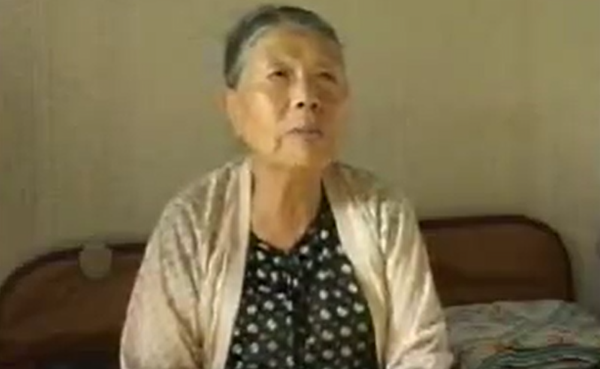

'위안부' 피해 할머니들의 생생한 증언입니다. 사진을 클릭하면 영상으로 이동합니다.
잊지 못할 상처를 안고 죽으려나
"열 여섯살에, 인제 내가 공부때문에 끌려갔다. 공부때문에 공부시켜준다. 뭐, 공장보내준다. 그래가꼬 그 밤에 갔어.
...
가서 가슴에 못 박고 잊지못할 상처를 안고 죽을 날도 몰라. 봉선화야 내 모든 그리 보냐. 이 노래 부르면서 많이 울었지. 울 밑에 봉선화가 좀 슬프지. 그런 거 부르고 혼자 있어야 그렇게 부르는기라
. 우리끼리 앉아서 고향 생각하면서"
입으로만 용서해달라는 걸 바라는게 아니야
"내가 내 나라로 돌아갈 수 있을까 없을까 항상 그거만 내 머릿 속에 남아있는 거지 죽을 궁리만 하는 사람이 어째 그런 생각을 안하겠어 항상 매일같이 자고 나도 그 생각 자면서도 그 생각, 그 생각이지 고향으로 돌아갈 생각 뿐이지."
몸값은 싫소 내 청춘 돌려주면 받겠소
"봤어 사죄하고 사죄에다가 내 청춘 돌려주시오 그랬다고 그랬다니까 하는 말이 청춘을 어떻게 돌려줍니까. 청춘은 나 돌려주면 받습니다. 돈은 근데 그....안 받습니다. 몸값 받았다고....안 받습니다. 내 청춘 돌려달라고 내께다 사죄하고 사죄하고...내 청춘 돌려주면 내가 감사히 받겠습니다. 이랬다고 그래서....나가면 아 그 청춘 돌려달라고 한 할머니 그럼 다 알아."
다 간 세월에 하고픈 말도 없어
"하고 싶은 말 없으면 이제는 곱게 잘 그냥 아프지말고 잘 사는거 밖에 없지 먹고 이렇게 살다가 가는 그것만 기다리는 거지 허고싶은 말 없어 나느 이제 세월은 다 간 세월인데 뭐"
나라만 뺏으면 됐지 왜 국민들은
"이 나라를 왔으면 이 나라만 저가가 하고 가면 돼지. 뭣 때문에 국민들 것은 희생을 치르고 다 빙시를 만들어놓고 지금은 나느 모르겠다하고 난 지금도요 그런거 물어보면 나 막 자꾸 열이 취해서 못 살아"